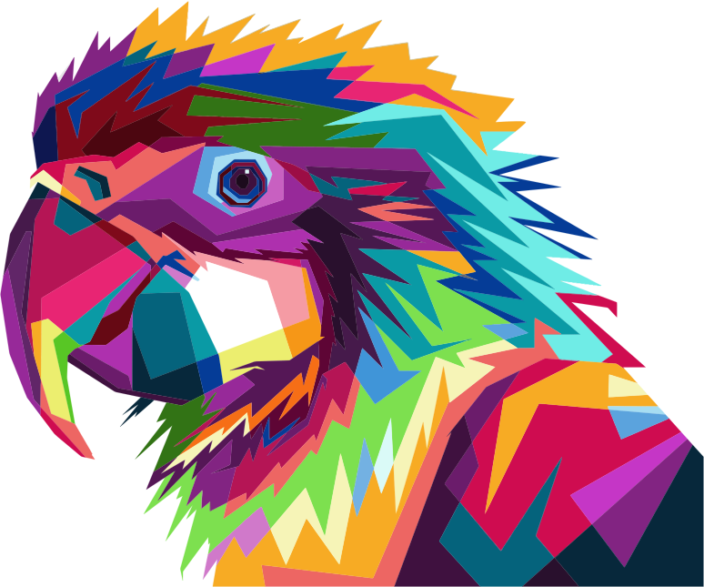
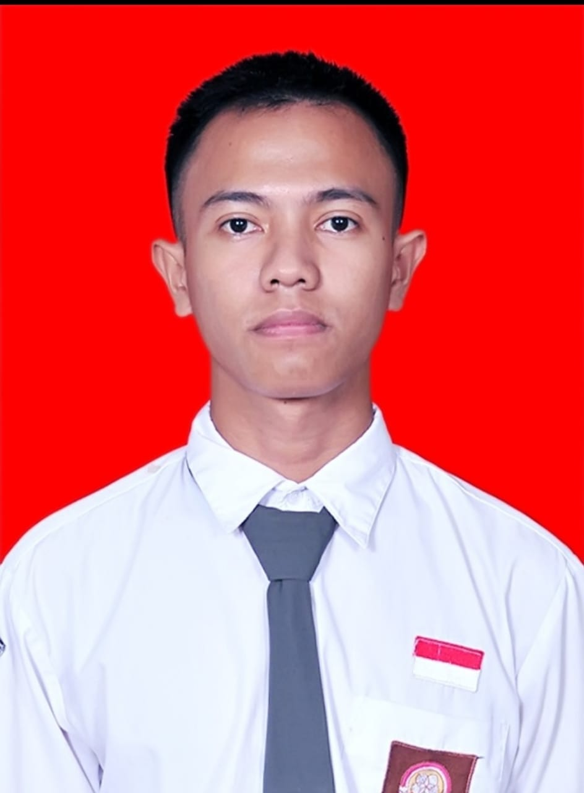

<!DOCTYPE html>
<html>
  <meta charset="utf-8">
  <title>Syahri Rhamadhan</title>
  <link rel="stylesheet" href="css/styles.css">
  <link rel="icon" href="dailyrecaplogo.ico">
</html>

<body>
     <div class="top-container">
        
        <div class="title-text">
            <h1 style="color: white;">Hallo saya Syahri Rhamadhan</h1>
            <h2 style="color: white;">saya progamer pemula</h2>
        </div>
        
        
    </div>

    <div class="midlane-container">
        <div class="profile">
            <br>
            <br>
            
            <h2>Perkenalkan.</h2>
            <p class="intro">Saya seorang Content Creator dan pemula Full Stack Developer. Kamu bisa melihat channel YouTube saya dibagian bawah, jangan lupa subscribe ya🔥.</p>
        </div>
        <hr>
        <div class="skills">
            <h2>Skills</h2>
            <p class="skill-row"></p>
            <h3>Full-Stack Developer</h3>
            
            <p class="skill-row">Saya mulai tertarik dengan dunia pemrograman disaat saya kelas 2 MTS dan saya memutuskan setelah tamat SMA saya akan kuliah dibidang It. Sayah harap setelah kuliah saya dapat memiliki ilmu yang bermanfaat agar saya semakin mahir dibidang frot-end dan back end.</p>
        </div>
        <div class="skill-row">
            
    
            <h3>Adobe Audition</h3>
            <p>Karena saya Content Kreator salah satu kemampuan saya mengedit audio menggunakan Adobe AU. Saya sudah mempelajarinya mulai dari 2 bulan yang lalu dan sekarang saya sudah cukup mahir.</p>
    
          </div>
          <div class="skill-row">
            
    
            <h3>Hobby</h3>
            <p>Selain saya menyukai teknologi saya juga sangat menyukai film, dalam seminggu setidaknya saya menonton 2-4 film terutama film trilogi. minggu ini saya menonton film <a href="https://id.wikipedia.org/wiki/The_Cloverfield_Paradox">The Clovervield Paradox</a> dan <a href="https://id.wikipedia.org/wiki/13_Hours:_The_Secret_Soldiers_of_Benghazi">13 Hours.</a></p>
    
          </div>
    </div>
    <hr>
    <div class="contact-me">
      <h2>Get In Touch</h2>
      <h3>Jika kalian menyukai film trilogi seperti saya</h3>
      <p class="contact-message">jika ingin menonton film bersama atau membahas misteri-misteri di dalam film, silahkan hubungi saya siapa tahu kita bisa berteman.</p>
      <a class="btn" href="mailto:syahrirhamadhan16@gmail.com">CONTACT ME</a>
    </div>


    <div class="bottom-container">
        <a class="footer-link" href="https://github.com/syahri322/cv1">GitHub</a>
        <a class="footer-link" href="https://web.facebook.com/profile.php?id=100006396197095">Facebook</a>
        <a class="footer-link" href="https://www.instagram.com/syahri_rha/">Instagram</a>
        <a class="footer-link" href="https://www.youtube.com/channel/UCZmM0TJ0GYauMd30Q1hHC0A?view_as=subscriber/">YouTube</a>
        <p class="copyright">© 2020 Syahri Rhamadhan YT: Diaily Recap</p>
      </div>
</body>